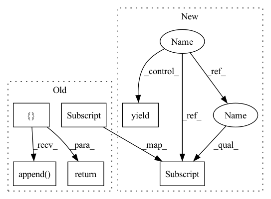

Pattern ID :26240
Before Change
class IdentityPairConstructor(TargetPairConstructor):
def __call__(self, data_dict):
obs, actions, dones = data_dict["obs"] , data_dict["acts"], data_dict["dones"]
dataset = []
trajectory_ind = timestep = 0
for i in range(len(dones)):
dataset.append( {"context": obs[i], "target": obs[i], "extra_context": [], "traj_ts_ids": [trajectory_ind, timestep]})
timestep += 1
if dones[i]:
trajectory_ind += 1
timestep = 0
return dataset
class TemporalOffsetPairConstructor(TargetPairConstructor):After Change
def __call__(self, data_iter):
timestep = 0
traj_ind = 0
for step_dict in data_iter:
yield {
"context": step_dict["obs"] ,
"target": step_dict["obs"],
"extra_context": [],
"traj_ts_ids": [traj_ind, timestep],In pattern: SUPERPATTERN
Frequency: 3
Non-data size: 6
Instances Fragment ID: 79014966
Project Name: humancompatibleai/eirli
Commit Name: 47ccff934463fdfcd9a8887bff27286744d1fe17
Time: 2020-11-16
Author: sam@qxcv.net
File Name: src/il_representations/algos/pair_constructors.py
M Class Name: IdentityPairConstructor
N Class Name: IdentityPairConstructor
M Method Name: __call__(2)
N Method Name: __call__(2)
M Parent Class:
N Parent Class: TargetPairConstructor
M File Name: src/il_representations/algos/pair_constructors.py
N File Name: src/il_representations/algos/pair_constructors.py
M Start Line: 31
M End Line: 40
N Start Line: 33
N End Line: 48
Before Change
class IdentityPairConstructor(TargetPairConstructor):
def __call__(self, data_dict):
obs, actions, dones = data_dict["obs"] , data_dict["acts"], data_dict["dones"]
dataset = []
trajectory_ind = timestep = 0
for i in range(len(dones)):
dataset.append( {"context": obs[i], "target": obs[i], "extra_context": [], "traj_ts_ids": [trajectory_ind, timestep]})
timestep += 1
if dones[i]:
trajectory_ind += 1
timestep = 0
return dataset
class TemporalOffsetPairConstructor(TargetPairConstructor):After Change
def __call__(self, data_iter):
timestep = 0
traj_ind = 0
for step_dict in data_iter:
yield {
"context": step_dict["obs"] ,
"target": step_dict["obs"],
"extra_context": [],
"traj_ts_ids": [traj_ind, timestep], Fragment ID: 79014961
Project Name: humancompatibleai/eirli
Commit Name: 1086682dee2c96d5c039e3190b1fec8ce4c683bd
Time: 2020-11-16
Author: sam@qxcv.net
File Name: src/il_representations/algos/pair_constructors.py
M Class Name: IdentityPairConstructor
N Class Name: IdentityPairConstructor
M Method Name: __call__(2)
N Method Name: __call__(2)
M Parent Class:
N Parent Class: TargetPairConstructor
M File Name: src/il_representations/algos/pair_constructors.py
N File Name: src/il_representations/algos/pair_constructors.py
M Start Line: 31
M End Line: 40
N Start Line: 33
N End Line: 48
Before Change
})
def get_args(args, search_params):
args_lst = []
for _params in itertools.product(*search_params.values()):
params = {key: params[idx]
for idx, key in enumerate(search_params.keys())}
print("--------Search Params---------------", params)
for idx, key in enumerate(search_params.keys()):
if hasattr(args, key):
setattr(args, _params[idx])
args_lst.append( args)
return args_lstAfter Change
if condi_params is None:
yield args
else:
for _params in itertools.product(*condi_params.values()):
params = {key: _params[idx]
for idx, key in enumerate(condi_params.keys())}
print("--------Search Params---------------", params)
for idx, key in enumerate(condi_params.keys()):
if hasattr(args, key):
setattr(args, key, _params[idx] )
yield args Fragment ID: 79014958
Project Name: hyliush/deep-time-series
Commit Name: 12d3cbf5ec9deddba1c7338e1213922c630b7302
Time: 2022-05-01
Author: 49185490+hyliush@users.noreply.github.com
File Name: utils/search.py
M Class Name: AnonimousClass
N Class Name: AnonimousClass
M Method Name: get_args(2)
N Method Name: get_args(2)
M Parent Class:
N Parent Class:
M File Name: utils/search.py
N File Name: utils/search.py
M Start Line: 13
M End Line: 23
N Start Line: 13
N End Line: 24